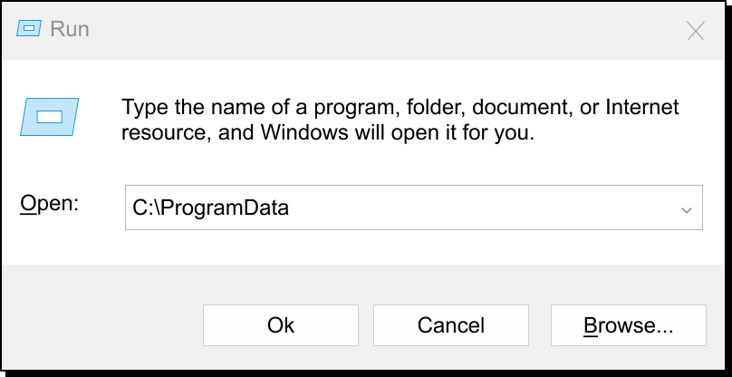

This article talks about what DupeToolKit malware is, how it works, and how you can remove it.
DupeToolKit is malware
Dupetoolkit is malware. More specifically, it is a RAT and InfoStealer.
A RAT or a "Remote Access Trojan" (or "Remote Administration Tool") is a type of software that lets
someone browser and control your computer remotely. This means they can control your mouse, open
your files, look at your passwords, etc.
An InfoStealer is a type of software that grabs as much of your account information as possible. This can be done by grabbing your saved passwords from your browser, and also your Cookies, which contain "session tokens." A session token is like a temporary password to access a website. If anyone has your session tokens, they can access your account and pretend to be you, steal your game items, and even steal money via payment providers (online banking, PayPal, etc.).
Am I ratted?
How to remove DupeToolKit
NOTE: Some antiviruses have started detecting the mod's virus and cleaning it up. This currently does not fully remove it, but it may in the future. Kaspersky Free is particularly good at dealing with this one.
- Open task manager via Control + Shift + Escape
- Locate the search bar at the top, then search up "Windows PowerShell" and "CMD". If any of these show up, right click the item and press end task.
- Press Win + R to open up a "run" box.
- In the field that says "Open", paste 
- There will be one or multiple .exe files in this folder, named something random like "128ajds372.exe" Their icons will look like a command console ("C:/" on a black screen). Delete these exe files.
- Download Microsoft's "Autoruns" program. This is a program to see what is starting up with your computer:
- When downloaded, right click on "autoruns64.exe" and select "Run as Administrator."
- Under the "Scheduled Tasks" tab, you might see those exe files you deleted earlier (they may be marked in red or yellow). Delete these by clicking on them and pressing DEL or right clicking them and selected "Delete."
Change all of your passwords on another device. Even though I believe these are all of the steps to remove this virus, it has already stolen your info and there is a chance it may still be lurking somewhere on your machine. So, make sure you change your passwords, and to be extra safe, change them on another device.
The UiUtils development team, the authors of this article, and people helping in Autism Inc / UI Utils discord servers do not accept any responsibility in the event that you are still infected or if you run into any problems as a result of this advice.
Exploiting tools and online safety
You can get safe tools for exploiting .
Downloading random mods off of the internet is still not recommended. Malware comes in many forms. Many mods that have malware still maintain functionality, but also run malicious background processes without you knowing.
Mods from Curseforge or Modrinth often contain safe mods, particularly the latter. Mods that have malware are able to get full access of your computer (Jar files are essentially .exe files).
Always proceed with caution while trying mods.
How the mod works
Info below is what we know about the malware.
- Payload mod (modid) – Malicious. Embedded as META-INF/jars/fabric-mixins.jar, loaded via fabric.mod.json.
-
Native Code Execution: dev.jnic.XqAXmn.JNICLoader
- Extracts an embedded .dat into a temp .dll/.so.
- Loads it with System.load().
- Escapes JVM sandbox, grants system-level access.
- Downloads, executes, obfuscates, and cleans up payloads.
- Uses steganography to hide data in images.
Information is considered accurate as of 11/25/25